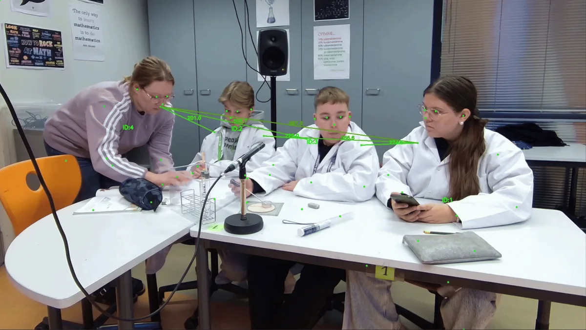

Gaze analysis from 2D video
A workflow for analysing gaze behaviour in groups using only ordinary front-facing 2D video, with no eye trackers required.
My work has two sides. As a researcher, I build computer vision and multimodal LLM methods that reveal how gaze, posture and proximity shape collaborative learning. I also coordinate an industry co-creation project with company partners on metacognitive laziness: the tendency to let AI do our thinking for us. I am part of the Learning, Education and Technology Research Lab (LET Lab) at the University of Oulu, Finland.
Open-source computer vision and multimodal LLM methods that turn ordinary classroom video into evidence about how groups regulate their learning.
An ongoing Business Finland co-creation project where researchers and companies explore how AI can support learners' self-regulation instead of replacing it.
A workflow for analysing gaze behaviour in groups using only ordinary front-facing 2D video, with no eye trackers required.

A novel workflow for measuring how close group members sit and move relative to each other. Used in the LEAD project to study proxemics in collaborative learning.
Large-scale posture analysis of collaborative learning video with multimodal large language models, plus a dashboard for running custom analyses.
Synchronises video and audio recording across multiple cameras and microphones on separate devices. Saved the LEAD project more than 300 hours of work.
I couldn't find a simple image annotation tool for research, so I built one. Define your own categories, step through a folder of images and export the labels to CSV.
Automatic coding of regulation-of-learning events with LLMs. The LLM-based coding reached reliability comparable to trained human coders.
A party trick: put it on a big screen with a webcam and let an AI judge everyone's Halloween costume.
No projects match.
Generative AI makes it easy to hand over the hardest parts of learning: planning, monitoring progress and reflecting on what worked. This is known as metacognitive laziness. The output looks good in the moment, but the skills that make people effective, independent learners quietly weaken.
The question we are working on with our company partners is how to build AI that helps people learn without doing their thinking for them.
This work builds on our LET Lab studies of AI agents and prompts that support regulation in collaborative learning.
Researchers and company partners working together on metacognitive laziness: how AI-supported learning can strengthen learners' agency and self-regulation instead of doing their thinking for them.
Loading publications…
Updated automatically from Semantic Scholar.
I am open to research collaborations on multimodal learning analytics and computer vision and LLM methods for studying learning, and to conversations about how AI can support learners' thinking rather than replace it.
ridwan.whitehead@oulu.fi